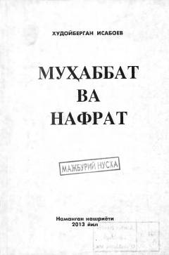

MVInson qalbida kechadigan muhabbat va nafrat tuyg'ularining falsafiy tahlili.
Ushbu asar inson qalbida kechadigan muhabbat va nafrat tuyg'ularining o'zaro kurashi hamda ularning inson hayotiga ta'siri haqida hikoya qiladi. Muallif inson tabiatidagi ezgulik va yovuzlik, iroda hamda nafs o'rtasidagi ziddiyatlarni falsafiy nuqtai nazardan tahlil qiladi.